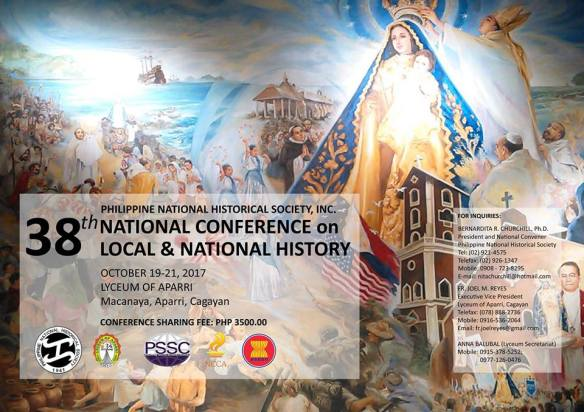

National Conference
A conference is generally understood as a meeting of several people to discuss a particular topic. It is often confused with a convention, colloquia or symposium. A convention is larger than a conference; it is a gathering of delegates representing several groups.
NU PEP SQUAD
The NU Pep Squad retained the UAAP Cheerdance Competition championship -- their sixth crown -- after another near-flawless routine on Sunday night at the Mall of Asia Arena in Pasay City.
The NU Pep Squad, which paid tribute to the Philippines in their routine -- dominated almost all the statistical points and finished with 722 points out of a possible 800. The FEU Cheering Squad, which paid tribute to the King of Pop Michael Jackson, was first runner-up with 706 points.
BRINDIS
This event is more like a prom where people can wear a formal suit or dress and people will dance who ever they want. Brindis is where people can enjoy the music and dance the ladies and gentlemans, parents are invited too.
{kind=link}
{kind=link}
{kind=link}
{kind=link}